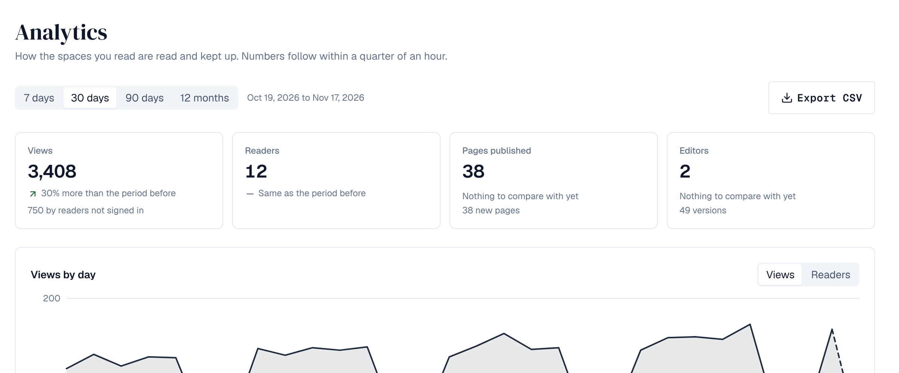
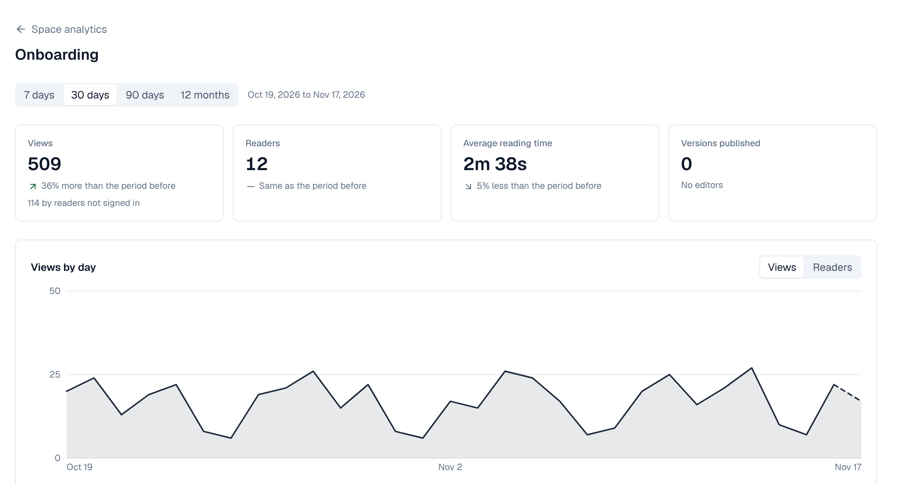
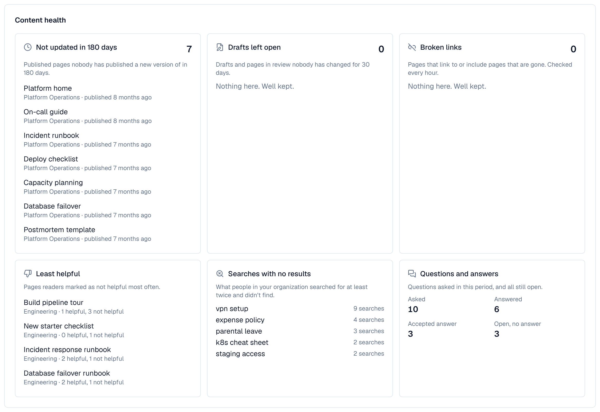

Analytics needs a Pro or Enterprise licence. Without one, the Analytics entries don't show and no views are recorded. See Licensing.
1. Overview
Analytics shows how the spaces you read are read and kept up. Numbers follow within a quarter of an hour. Pick the Period: 7 days, 30 days, 90 days or 12 months, each compared with the same length of time before it.

| Where | What it shows |
|---|---|
| Analytics in the left menu | Every space you can read: views, readers, pages published, editors and average reading time, views or readers by day, the most viewed pages and spaces, who published, and content health |
| A space's Analytics tab | The same for one space, with People (who read and who published) for the space's admins |
| Analytics under a page's title | One published page: its views, readers, reading time and Was this page helpful? answers |
2. What is counted
- A view is a published page opened in the browser. The same person opening the same page again within 10 minutes is one view.
- Readers who aren't signed in count as views (shown apart), not as readers.
- Reading time is the time the page was on screen with the tab visible.
- Pages read through API tokens aren't counted, and drafts never are.
- Each view is kept 90 days, and who read what each day 25 months. Daily counts per page and space are kept as long as the page or space.
Who read what is shown only to a space's admins. Everyone else sees counts. Names of people who published follow the space's rule for seeing people.

3. Content health
Content health lists pages that need looking after, ten of each with a total:
| List | Pages |
|---|---|
| Not updated in 180 days | Published pages nobody has published a new version of in that time |
| Drafts left open | Drafts and pages in review nobody has changed for 30 days (in a space's analytics, for people who edit pages there) |
| Broken links | Pages that link to or include pages that are gone. Checked every hour. |
| Least helpful | Pages readers marked as not helpful most often |
| Searches with no results | What people in your organization searched for at least twice and didn't find (in Analytics in the left menu, for administrators) |
| Questions and answers | Questions asked in the period, answered and with an accepted answer, and all still open (in Analytics in the left menu) |

4. Export
Export CSV downloads the most viewed published pages of the period (up to 10,000): space, page, title, views, views by readers not signed in, readers and average reading time, for the spaces in view.